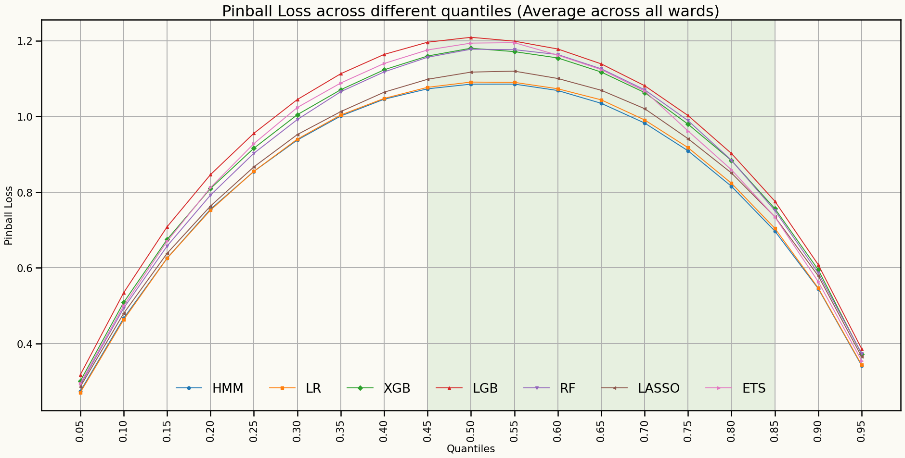
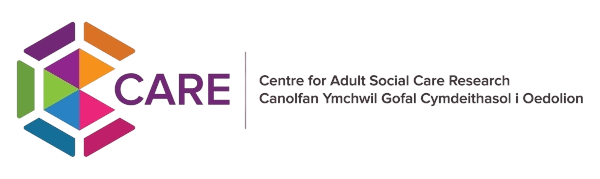
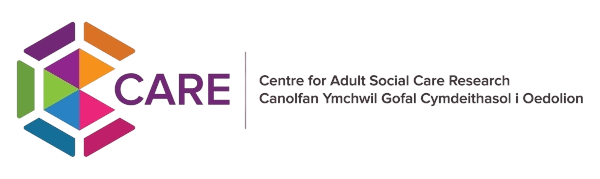

 

Enhancing Discharge Care Planning: A Probabilistic Data-Driven Approach
Mustafa Aslan, Cardiff University, UK
Lead supervisor: Prof. Bahman Rostami-Tabar
Co-supervisor: Dr. Jeremy Dixon
Data Lab for Social Good
Cardiff University, UK
9 Oct 2025
Outline
What problem(s) does our research focus on?
Research Questions and How We Address Them
Methodology & Approach
Progress so far?
Outline
What problem(s) does our research focus on?
Research Questions and How We Address Them
Methodology & Approach
Progress so far?
What problem(s) does our research focus on?

Problem
- The challenge of capacity management
- Inefficient use of healthcare and social care resources
- Inadequate discharge care coordination
- Difficulties with discharging medically fit patients in a timely manner
Why it matters
Poorly managed discharge processes negatively affect both individuals and patient flow through hospitals, creating bottlenecks that increase pressure on all healthcare services.
Who it impacts
Patients, healthcare professionals, and the overall healthcare system.
Outline
What problem(s) does our research focus on?
Research Questions and How We Address Them
Methodology & Approach
Progress so far?
❓Research Questions and How We Address Them

❓Research Questions and How We Address Them

❓Research Questions and How We Address Them

❓Research Questions and How We Address Them

Outline
What problem(s) does our research focus on?
Research Questions and How We Address Them
Methodology & Approach
Progress so far?
🛠️ Methodology & Approach
Data
- SAIL Databank
- Patient-level data sources
Model Development
- Mathematical modelling
- Stocastic optimization and reinforcement learning methods
- Machine learning
- Probabilistic modelling
Validation and Testing
- Cross-Validation to test predictive models
- Test models in a real-world setting, possibly in collaboration with a hospital
Outline
What problem(s) does our research focus on?
Research Questions and How We Address Them
Methodology & Approach
Progress so far?
Progress so far?

Models
Forecast Distributions (Quantile scores)
Any questions or thoughts? 💬